 ALL
ALL
202307052318 - No Title
202308111213 - No Title
202308212300 - if we learn how to deal with stress, the healthy mechanisms stay healthy
202309131344 - our economic system is intrinsically undemocractic
ADAPT-CHANGE - No Title
ADAPT-CYCLES-A - adaptive cycles help us to understand how to transform our systems
AGRICULTURE-A - Summary of emissions of agriculture and livestock
ALL - No Title
ANARCH-COUPLE-A - Kill the couple in your head
APP-IDEA-A - An app for friends where we share intentions for the week and spontaneous trips
APP-IDEA-B - An app for different forms of communication: letters, short notices etc…
APP-IDEA-C - A cute sharing ideas among friends platform
APPS-USEFUL-A - Apps useful for planning
AUTOPOIESIS-A - The essence of our social systems is reproduced in the structures they create
AYURVEDA-DOSHAS - No Title
BELIEVING-A - if we believe, we can’t think
BIOMIMICRY-A - Biomimicry lessons mapped against the wisdom of the Nonngar people of Western Australia
BUBBLE-HASHTAGS - List of hashtags used to indentify a variety of bubbles
CAPABILITIES-FOR-LIFE-FRAMEWORK - A framework to nurture life-centric capabilities.
CERT-ORG - An organization that certifies circular economy endavours on sliding scales among various rubrics
CHOMSKY-GLOBAL-HEG-VID - Noam Chomsky – “Global Hegemony: The Facts, The Images”
CIRCULAR-ECON-A - Circular economy in a visual
CIRCULAR-ECON-B - Our society quite devoid of practical teachings about stuff and home
CIRCULAR-ECON-C - Much money and nutrients would be saved if materials were re-used
CIRCULAR-ECON-D - Why we need to take circular economy frameworks with a grain of salt
CIRCULAR-ECON-E - We need to consider intellectual property as a material in the circula econoomy - it needs to circulate among the whole ecosystem
CIRCULAR-ECON-F - Resrouces for no-waste shopping in the East Bay of San Francisco
CIRCULAR-ECON-G - Idea for a virtual platform: An Amazon-like database for products that can truly last a life-time (and are ethical)
CLIMATE-ACT-RESOURCES-A - A list of useful links in the climate activism and climate tech world
CLIMATE-ACT-RESOURCES-B - Conferences in the environmental justice (& engineering) space
CLIMATE-ACT-VENN-A - climate action venn diagram
CLIMATE-CHANGE-A - Solving climate change means to transform relationships of power
CO-CREATIVE-ECONOMY-A - Growing the Co-Creative Economy
COFFEE-BLOCK-CAPTURE - No Title
COLLABORATIVE-ECOSYSTEMS-A - No Title
COLLECTION-GRAPHICS-UI - A collection of my graphics
COLLECTION-JUST-ENERGY-HUB - No Title
COMBAT-A - Insight: it’s useful for a system of violence that we are conditioned to react to critique or voicing concern with feeling hurt and fighting back because it keeps our society in a state of fighting instead of working together
COMMUNICATION-A - It seems crucial to talk about how we talk
COMMUNITY-A - A saving dump of concepts and resources related to community building
COMPLEX-SYSTEMS-FRAMEWORK-A - Cynefin framework
COMPLEXITY-A - People and systems complexity
CONFERENCE-COMMUNI-A - Tell people who participated or spoke up during a conference panel what you liked about their words and ways of speaking
CONFERENCE-COMMUNI-OVERV - A list of ideas for improving conference or retreat style conversations
COOP-EXPECTATIONS - No Title
COOP-PRINCIPLES - Coopeartive Principles
CUTE-A - Name idea: the lame baby club
DEATH-A - It’s all about the ability to create relationships and let go of relationships.
DEGROWTH-SDG-IPCC - SDGs addressed by degrowth
DESIGNING-WITH-COUNTRY-A - Danièle Hromek’s 14 principles for what non-Indigenous architects can do to Indigenize practice.
DIALOGUE-A - The difference between a dialogue and a discussion
DICTATORSHIP-A - Workplace dictatorship is when the owner has the right to tell the worker what to do
ECO-JUSTICE - No Title
ECOLOGY-A - Ecological problems originate in societal structures and problems
ECON-GROWTH-A - Neoliberalism did not even achieve bigger growth, instead it shifted capital from lower classes to upper classes
EFFORT-BROKEN-FEEDBACK - Effort is evidence for broken feedback loops
ELECYT-LASER-VIZ-A - An overview for my “laser music visualizer”
EMANCIPATORY-ACTION-RESEARCH-A - What is emancipatory action research?
ENERGY-CONSUMPTION-A - building energy use accounts for 40% of total energy use
ENERGY-ENG-A - No Title
ENERGY-JUSTICE-A - Framework for energy justice: AAA
ENERGY-VEGAN - Let’s be energy-vegans
ENG-WAR - Ethymologically engineering is rooted in creating war tools
ENGINEERING-A - engineering is not a useful term for the work I seek to do in my life as an engineer
ENGINEERING-SYSTEMIC-PATTERNS-A - No Title
ENTITLEMENT-A - No Title
ENV-NAT-DIFF - nature means a birth place, environment means a passive thing lying around
EXTRACTION-A - Our scientific innovation paradigm is based on extractive processes
EYT-MUSIC-VIZ-IDEAS - No Title
EYTCareClubInspo-A - A loose collection of inspiring pieces oriented toward care while partying
EYTCareClubInspo-B-Drinks - A list of nourishing drinks for dancing
EYTClubCollab-A - Ideation around partying together and separately
EYTClubCollab-B - Sticker slogans that explore the essence of collaborative partying
EYTIdentity-A - When do I show my face? When do I use my voice?
EYTInterestingMusicWebsites - No Title
EYTLaserViz-A - An overview for my “laser music visualizer”
EYTLaserViz-B - Dreaming about future design of the music laser visualizer
EYTMusicSimilaritySearchEngine - New online digging tool cosine.club recommends tracks based on similarity
EYTMusicVizIdeas-A - A list of responsive or interactive music visualization ideas
EYTSongDownloadingConversion - No Title
FACTS-A - facts remain robust only when they are supported by a common culture
FAITH-BELIEF-SCIENCE - No Title
FLOW - No Title
FRAMEWORKS-COMMUNITY-WEAVING - No Title
FREE-WILL-A - “The opposite of free will is not determinism but compulsion”
GLUCOSE-A - No Title
GRADES-A - VISUAL: Grades are a sad mix of rejection and merely good enough
IMAGINATION-A - Immersion into the unknown & imagination
INDEXING-CODING-WHY - One perspective on why indexing and numbering arrays in coding is so weird
INNOVATORS-COMPASS-A - No Title
INSPIRATION-ILLUSTRATIONS - Illustrations that inspire me to create
INSPO-DRAWING-A - Inspiration for drawing people in illustrations
INSTALLATION-1 - Use all times square screens as monitors for city systems such as waste flows, monetary streams, consumption patterns
INTELLIGENCE-A - intelligence is compression
INTERDISCIPLINARITY-A - How do we create an interdisciplinary course?
INTERVIEWING-A - No Title
INTRINSIC-EDUCATION-A - INSIGHT: I feel like the real goal of education is to figure out how to genuinly explore
IPCC-TRANSITION - IPCC AR6 sees transition needs in 5 realms
JUST-TRANSITION-PRINC - Just Transition Principles
KNOWING-A - It is normal to not know until we know
KNOWLEDGE-ORGANIZATION-A - No Title
letter-to-the-SF-Chronicle - A selection of graphics
LIBERATORY-DESIGN-A - No Title
LUHMANN-COMMUNI-A - It is not individuals but the structures through which they communicate that build our social systems (which are different from psychic systems)
LUHMANN-COMMUNI-B - Communication “arises through a synthesis of three different selections, namely, selection of information, selection of the utterance of this information, and a selective understanding or misunderstanding of this utterance and its information”
MANTRA-GAYATRI - The Gayatri mantra
MANTRA-SRI-YANTRA - No Title
MARKET-CONF-A - IDEA: create a market space to network, surface insights & proposals, and interconnect movement efforts
MASLOWS-NEEDS-BEYOND - classic Maslow model: pyramid of needs
MCGILCHRIST2021-VID - Notes of Video: Our Unmaking of the World - and the return to being
MEDIA-MOVEMENT-BUILDING-A - Movement building principles for media creation
MEDITATION-BREATHING-RATIOS-PRANAYAMA - Effect of various breathing rations or breathing rhythms
MEDITATION-SAMATHA-STAGES - The stages of Samatha Meditation
MESH-CAP-A - IDEA: Media for movement building: collective shaping and organizing of information containers based on a file type
MESH-CAP-B - INSIGHT: it is more enticing and connecting to have homework instructions that ask about “why we are interested in something” and to learn about other humans than only focus on external, far-away knowledge
MESH-CAP-C - IDEA: A visual space to create and share, organize, archive and collaborate on snippets
MESH-CAP-D - Project ideas for capstone
MESH-CAP-E - canvas “discussions” as an explorative map
MESH-CAP-EPIST-A - Empistemological bubbles of my capstone project
MESH-CAP-F - Surfacing slow violence within the container is important for collective liberation and (self-)awareness
MESH-CAP-G-1 - list of tools and practices useful and necessary for an organized work flow
MESH-CAP-G - Tangible creations list
MESH-CAP-H - Things I want to ask people
MESH-CAP-I - What’s my project about and how do I say it?
MESH-CAP-MEDIA - Media collection
MESH-CAP-METHOD-A - No Title
MESH-CAP-OVERVIEW - How do the pieces of my MESH capstone project relate to each other?
MESH-CAP-VERIF-A - How do I verify my work and project ideas?
MESH-CAP - No Title
MESH-EJ-THESIS - No Title
MESH-JEH-Overview-A - No Title
MICRO-GRIDS-A - Microgrids and
MILIT-A - Stats surrounding the scale of the US military industrial complex
MILIT-B - No Title
MINING-A - No Title
MIXBASE-DOCUMENTATION - No Title
MMSBigTechA - Isn’t it wild that we haven’t heard of Mark Zuckerberg talk about his understanding of friendship and community?
MMSCapitalismA - Difference and division are core-components of capitalist thriving
MMSCityPublicReportCenter - No Title
MMSCollaborationA - Intellectual property is wasteful and threatens our planet
MMSCommuniA - Original intentions behind mostly.mutual.studio
MMSDigitalComA - Communicating about communication between friends
MMSFinanceVisual - most of the money on this planet is not tied to any real valuable thing
MMSHealthAutopoiesis - No Title
MMSHealthTechCommuniA - A proposal to change communication around and interface design for battery health
MMSHistOfSci-A - A critical synthesis: history of the scientific method
MMSHothouse - No Title
MMSLoans - The problems around issuing loans (the way banks are allowed to do it)
MMSMeatStickA - A sticker to speak to the innate nature of humans to refrain from causing immense animal suffering
MMSMusicStorageA - storing playlists and artists visually would help browsing, memory, and create a feeling of realtionship to the collection
MMSNutritionLabeling - Envisioning nutrition in grocery stores and on tech products
MMSOlinSystemsBuilding - No Title
MMSPhilOfSciA - One building block for Philosophy of Science
MMSSensingA - A visual methaphor for the process/phenomenon of sensing our world and feeling the whole reality
MMSSocialReproductionA - Autopoiesis and the re-production of social systems
MMSSocialReproductionB - What environments aid the emergence of a regenerative future?
MMSStickPlsComp - can public places please compost & recycle?
MMSSystemIntervention-A - How to intervene successfully in social systems, which are considered complex systems
MMSTuningIntoSeparation - Notice how we justify killing
MMSWasteA - Quotes and insights around E-Waste
NATURE-PARADIGMS - Paradigms that show up in nature
NEED-A - No Title
NOTETAKING-A - Resources for notetaking
OANM-EMOTIONAL-SHARING - Visualizing offers, needs, and emotions within the community in a 2D or 3D way with an indicator for time
OANM-HUB-FOR-LOCAL-BUS - Interface or consulting hub to interconnect local businesses with other orgs to share and satisfy offers and needs
ONTOLOGICAL-PRIMITIVES - What are ontological primitives?
OPP-LIB-PRAC-A - The Wheel of Oppression and Liberation
ORG-A - How to tag my zettels
org-movement-building - No Title
org-people-power-solar-cooperative - No Title
OVERVIEW-CAPITALISM - what is capitalism
OVERVIEW-DEGROWTH - No Title
PEACE-A - You don’t need and can’t have nation state boarders for peace
PEACE-ENGINEERING-A - Peace engineering requires engineers to be integrated into the commuity
PED-OF-LOVE - No Title
PERSONAL-VALUE-SYSTEM - My value system
PHENOMENA-A - Phenomena of life
PLUS1SOUNDA - Loud high pitch sounds damage your ears more than low pitch sounds
POLICY-RESTAURANT-A - very easy policy: all restaurants use only reusable to go boxes
PORTFOLIO-SYSTEMS-THINKING-ILLUSTRATIONS - No Title
PORTFOLIO-WEBSITE-INSPO - A list of portfolios and websites that inspire me
POVERTY-OVERVIEW - What is poverty?
POVERTY-STATS-A - No Title
POWER-A - No Title
POWER-ECONOMY-A - The flow of power in different economic systems
PRECAUTIONARY-PRINCIPLE-A - Precautionary Principle versus Burden of Proof
PRESENCE-A - if we are present in our world and truly feel what is in as and around us, we know what to do and how to transform and change ourselves
PROBLEM-VS-ASPIRATION - Working based on problem-solving leads to paradoxical states of changing little
PROBLEMS-A - Solving problems can never be the solution for long-term healing
PROBLEMS-B - Good and bad problems to have
PROGRESS-A - We need to be given back the right to define progress for oursevles, for our communities
PropOfSciences - the propositions or interests of the social & natural sciences
PROSPERITY - How to define prosperity (in the context of degrowth)
RADICALNESS - Radicalness means to go back to the roots of the injustice
READING-RECS-A - Philosophical readings that I want to share with all my friends
RECYCLING-A - Avoided CO2 emission for recycling & avoided production for various materials
REGENERATION-A - Regenerative practices are not combinable with militarism
RENEW-MINING-A - The energy transition requires massive mining which leads to desastrous outcomes
REPAIR-A - The connection between repairing consumer devices and human relationships
REPAIR-B - Right to repair - main things
REPAIR-E-BIKE-A - No Title
RESTAURANT-CRIT-A - “Can I take that bread from you? Can you please leave it until the end of my stay”
RESTAURANT-IDEA-A - Mountain of Roti and Staples like whole fruits in the room
RESUME-WRITINGS-A - What does it mean to be a holistic engineer?
RESUME-WRITINGS-B - Spirituality and ecological justice: How can we transform ourselves?
RESUME-WRITINGS-C - Envisioning architectural & engineering relationships to the land inspired by indigenous ways of being
RESUME-WRITINGS-UPLOAD - Things that need to uploaded to the writings section
SCIENCE-OF-HOLISM-FRAMEWORK - No Title
SEEDS-A - Commercial agriculture uses low variety of seeds
SENSING-B - Otto scharmers framework for turning inward to see the external system within ourselves
SETH-PRACTICES-A - Practices for energy, flow of qi, loosening, and reflection
SMALLBUSINESS-RENT - if rent is low, businesses can sell for different prices if they also practice transparency and democratic shaping
SOIL-A - A Textural Classification of Soils
SOLAR-ENERGY-A - “Land-sparing” solar installations save land and use land wisely
SOMATIC-HEAL-WHITENESS - Healing internalized white-supremacy start with healing the relationship to ourselves
SPIRIT-TRANSFORMATION - spiritual transformation
SPIRIT-WORK-A - The relationship between working with oneself and working together
ST-HL-A - We need different stories as healers
STREAMING-COMMUNITY-PLATF - Streaming platform for music that shows you map of local artists around you
SUST-JOBS - No Title
SYSTEMIC-CHANGE-A - No Title
TECH-INTERDEP-A - No Title
TEST - Test Links
THREE-WELLBEING-THINGS - No Title
TRAGEDY-COMMONS-A - No Title
UNLEARNING-A - We need to completely rework & unlearn our lives and social systems
VEGETABLE-STATS-A - No Title
WASTE-A - Companies need to face the e-waste they create
WASTE-B - Food Waste Overview
WASTE-C - An excerpt from “Neither Wolf nor Dog”: why do Indians keep so much trash on their land if it could be so easy to clean it up?
WEBSITE-SIZE-CHECK-A - Check the size of your website including images
WORK-BALANCE - No Title